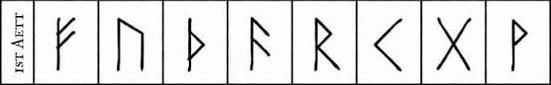
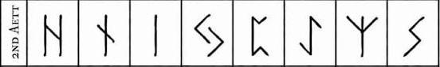
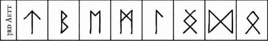

The First Aett
In a symbolic sense, this aett symbolizes the creation of the universe and turning chaos into order.
This group starts with the rune Fehu and generally represents material wealth, possessions and physical well-being.
The runes in this aett often deal with the basics of life, such as prosperity, health and personal success.
- Fehu
- Uruz
- Thurisaz
- Ansuz
- Raido
- Kenaz
- Gebo
- Wunjo

The Second Aett
This aett represents disruption and change.
Beginning with the rune Hagalaz, this aett focuses on challenges, transformations and natural forces.
The runes here often symbolize the trials one must go through for growth.
- Hagalaz
- Nauthiz
- Isa
- Jera
- Eihwaz
- Perthro
- Algiz
- Sowilo

The Third Aett
Symbolically, this aett represents ascension towards god and goddesshood, and starts with the rune Tiwaz.
It is associated with higher concepts such as justice, honor and spiritual growth.
The runes in this aett often deal with leadership, self-sacrifice and the pursuit of higher ideals.
- Tiwaz
- Berkano
- Ehwaz
- Mannaz
- Laguz
- Inguz
- Dagaz
- Odal
